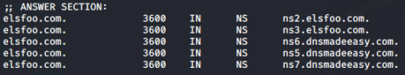
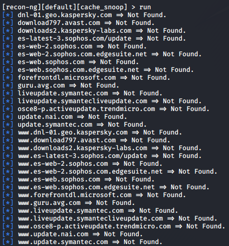

cache_snoop
Use the DNS Cache Snooping to find antivirus used by the target organization
It relies upon sending non-recursive DNS queries to the corporate DNS server to determine whether that DNS server has a cache that includes that AV manufacturer's website. If it does, that means that someone within the organization is using that AV software (someone is the organization has had to go to the website to update signatures) If it doesn't, it means that no one has queried for that AV manufacturers site and is likely not using that software.
We first need to find the nameserver for our target website
to get the IP from the nameserver
let's use another Recon-ng module to determine the most likely antivirus tool or tools the target organization is using
back
modules load discovery/info_disclosure/cache_snoop
options list
Even though we already set NAMESERVER(DNS server of the target organization) before, you need to set it again. This module doesn’t read that variable from the global variable store, so we need to set it here in the context of this module.
options set NAMESERVER 198.178.124.83 #IP address of elsfoo.com
As the module runs, look carefully at its output. You'll note that it says “Not Found.” for the majority of the domain names. But if show it “Snooped!” is likely that that the target organization is utilizing the “Snooped” antivirus product listed.
This information about the target's AV vendor is tremendously useful in our penetration test,
